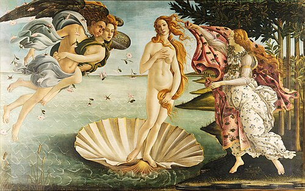
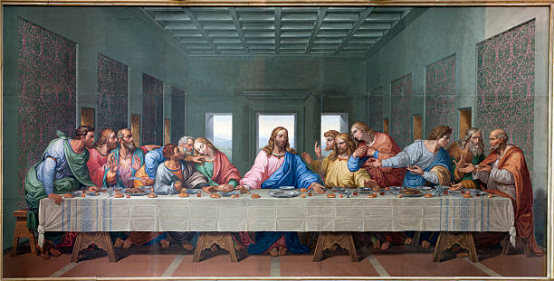

ZISHAN'S ART GALLERY
This is my Art Gallery .I will describe three popular paintings here.
1)THE MONALISA
 The Mona Lisa is a renowned portrait painted by Leonardo da Vinci between 1503 and 1506, depicting a woman with an enigmatic expression that has captivated viewers for centuries. Believed to be Lisa Gherardini, the wife of a Florentine merchant, the subject is seated calmly against a hazy, dreamlike landscape, with subtle use of light and shadow known as sfumato enhancing the realism of her face. The painting is celebrated for its technical mastery, especially in the rendering of the subject’s eyes and smile, which seem to follow the viewer. Measuring just 77 by 53 cm, the Mona Lisa has become one of the most famous and studied artworks in the world and is housed in the Louvre Museum in Paris, where it draws millions of visitors each year.
The Mona Lisa is a renowned portrait painted by Leonardo da Vinci between 1503 and 1506, depicting a woman with an enigmatic expression that has captivated viewers for centuries. Believed to be Lisa Gherardini, the wife of a Florentine merchant, the subject is seated calmly against a hazy, dreamlike landscape, with subtle use of light and shadow known as sfumato enhancing the realism of her face. The painting is celebrated for its technical mastery, especially in the rendering of the subject’s eyes and smile, which seem to follow the viewer. Measuring just 77 by 53 cm, the Mona Lisa has become one of the most famous and studied artworks in the world and is housed in the Louvre Museum in Paris, where it draws millions of visitors each year.
2)THE BIRTH OF VENUS
The Birth of Venus is a famous Renaissance painting by Sandro Botticelli, created around 1484–1486, which depicts the Roman goddess Venus emerging from the sea on a giant scallop shell, symbolizing her mythical birth. Inspired by classical mythology and the writings of poets like Hesiod, the scene shows Venus being blown toward shore by the wind gods Zephyrus and Aura, while a Hora of Spring waits to clothe her. The painting reflects the ideals of beauty and harmony central to Renaissance humanism and Neoplatonic philosophy, suggesting a connection between physical beauty and divine love. With its graceful lines, flowing forms, and ethereal figures, the artwork remains one of the most iconic representations of mythological subject matter in Western art, housed today in the Uffizi Gallery in Florence.
3)THE LAST SUPPER
The Last Supper was the final meal Jesus shared with his twelve disciples before his crucifixion, as described in the Christian Gospels. Held in an upper room in Jerusalem during the Jewish festival of Passover, this event is significant for its deep theological symbolism and for instituting the practice of Holy Communion (or the Eucharist), where Jesus broke bread and shared wine, representing his body and blood. During the meal, he predicted that one of the disciples would betray him—later revealed to be Judas Iscariot—and spoke of his impending suffering and death. The gathering also included important teachings about humility, love, and service, including Jesus washing the disciples’ feet. This pivotal moment in Christian tradition has been depicted in countless works of art, most famously Leonardo da Vinci’s painting.
| ART |
ARTIST |
YEAR |
| THE MONALISA |
LEONARDO DA VINCI |
1503-1586 |
| THE BIRTH OF VENUS |
SANDRO BOTTICELLI |
1484-1486 |
| THE LAST SUPPER |
LEONARDO DA VINCI |
1495-1498 |